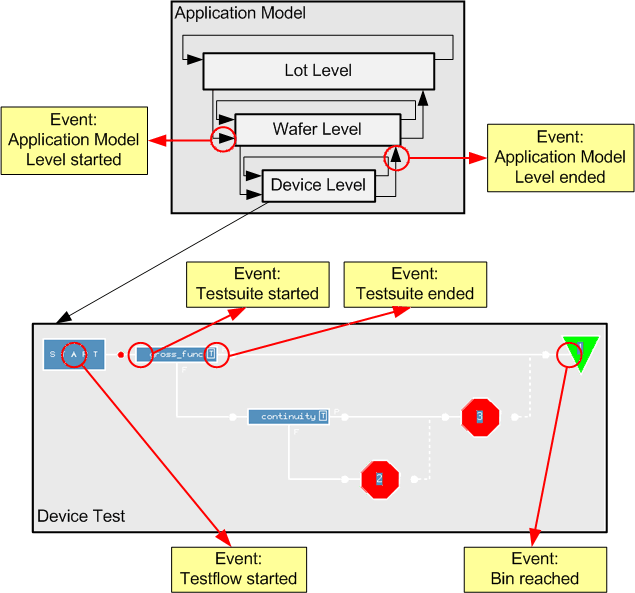
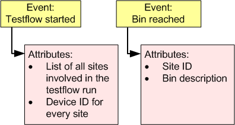

Event concept
This section explains the event concept, on which the event data logging mechanism is based.
In order to understand the event concept, it is important to remember that every production test run consists of a series of individually executed tasks. The application model imposes a hierarchical level structure onto the production test and also on the tasks. Thus, there are high-level tasks (like the start of an application model level), and low-level tasks (like the execution of one test function for one device). Each task forms one step in the execution of a production test.
In the event concept, each such task (be it high- or low-level) is regarded as one event.
The figure below illustrates the event concept by highlighting some events of a production test.

The event concept allows a production test run to be fully logged by listing every event occurrence together with all data necessary to fully describe the event. In the event concept, every piece of such data is called an attribute.
The figure below shows the attributes associated with two example events.

Functional changes
- Introduced before SmarTest 6.3.2